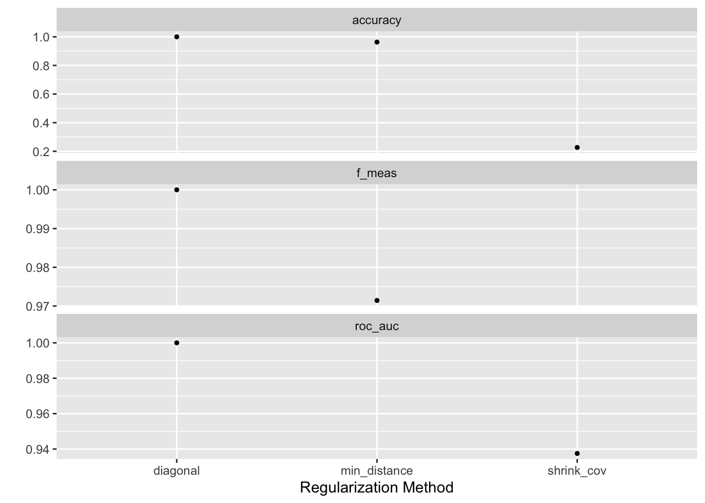
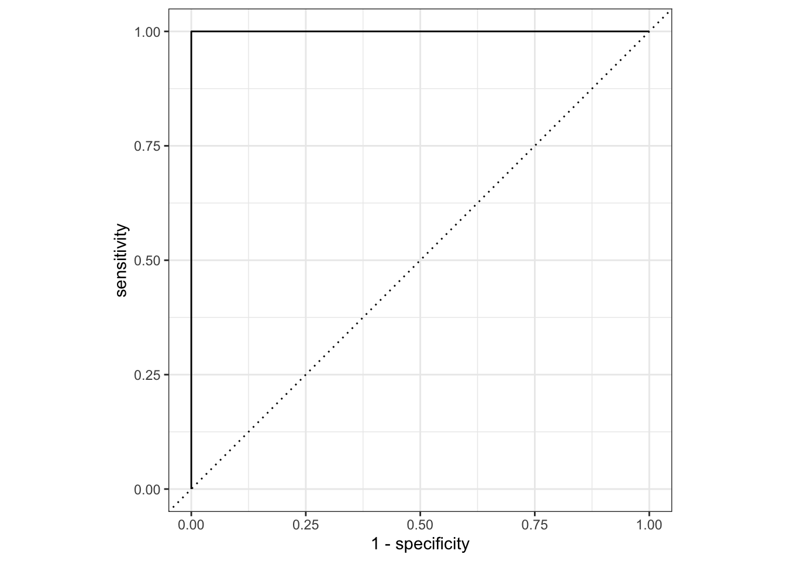
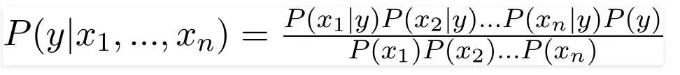
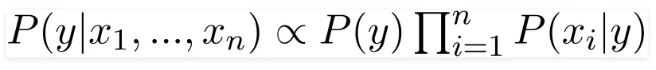
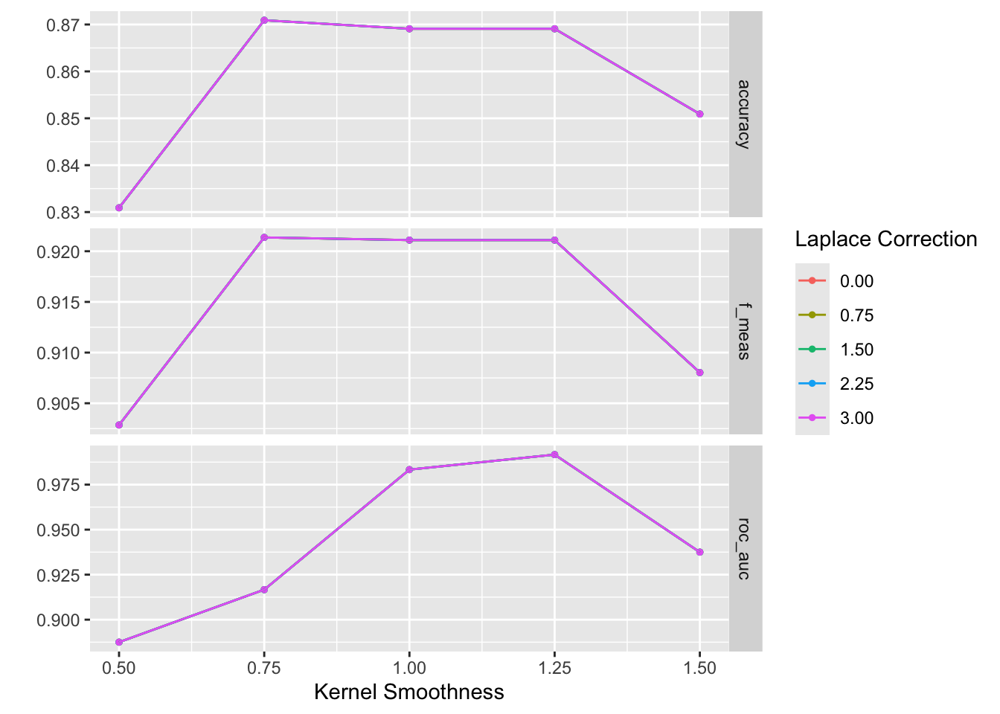
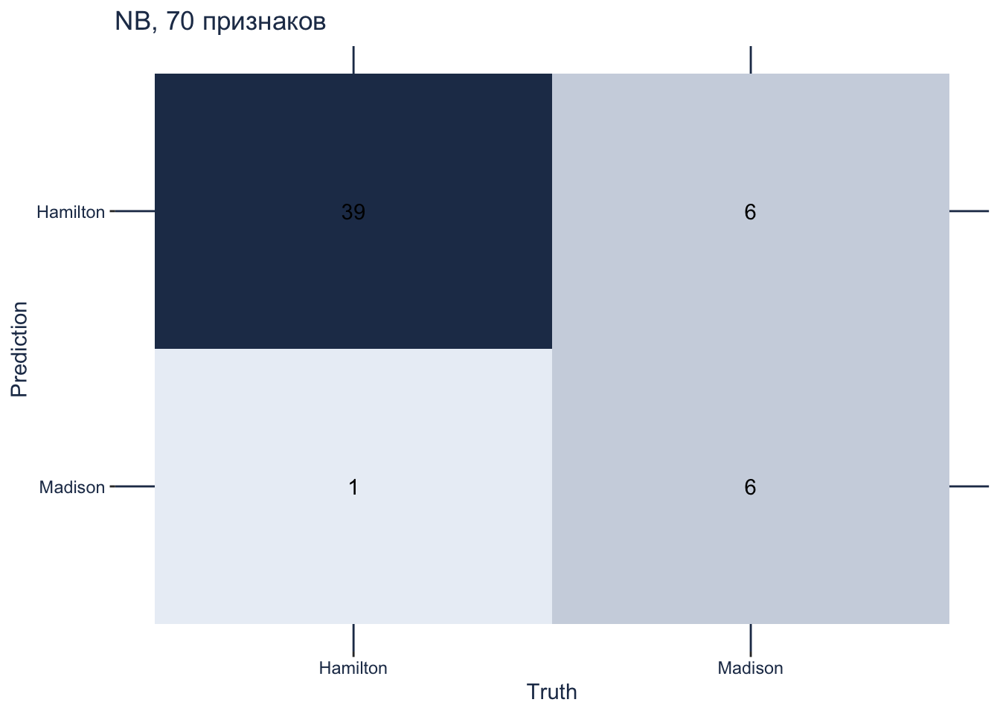
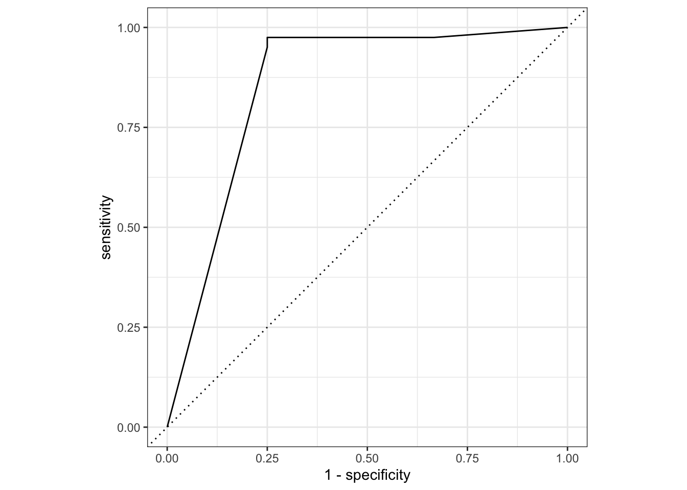
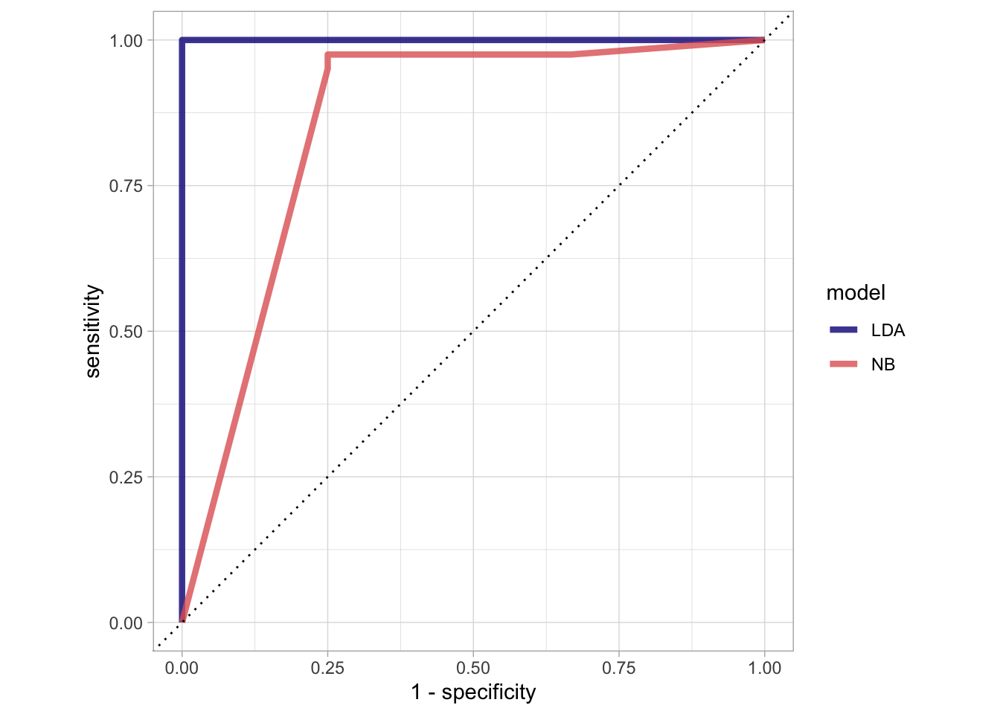

library(tidyverse)
library(tidymodels)
conflicted::conflict_prefer("filter", winner = "dplyr")
conflicted::conflict_prefer("select", winner = "MASS")
library(discrim)24 Бинарная классификация
В предыдущих двух уроках мы познакомились с регрессией, а в этом поговорим о классификации. Алгоритмов классификации в МО великое множество, в этом уроке мы рассмотрим два из них: линейно-дискриминантный анализ и наивный Байес, а также научимся подбирать гиперпараметры модели.
24.1 Записки “Федералиста”
В 1963 году два американских статистика, Фредерик Мостеллер и Дэвид Уоллес, опубликовали статью «Inference in an Authorship Problem», в которой они успешно разрешили вопрос о том, кто написал 12 спорных памфлетов из «Записок федералиста» — сборника статей в поддержку утверждения Конституции США (кон. XVIII в.).
Кандидатами в авторы 12 спорных памфлетов были Джеймс Мэдисон (четвертый президент США) и Александр Гамильтон (соратник Джорджа Вашингтона, основоположник американской экономической системы). Гамильтон и Мэдисон писали в схожей ораторской манере, и в некоторых отношениях были практически стилистическими «близнецами». Однако статистикам удалось найти способ их различить.
В распоряжении статистиков были методы традиционной фишеровской статистики (дискриминантный анализ, предложенный в 1936 г.), но они впервые решили дополнить его байесовскими методами, что можно считать рождением алгоритма, известного сегодня в МО под именем Наивный Байес. Кроме того, Мостеллер и Уоллес впервые показали, что для решения вопроса об авторстве важны наиболее частотные слова, употребление которых человек почти не контролирует. Впоследствии это наблюдение легло в основу метода, предложенного Берроузом.
24.2 Подготовка данных
По ссылке скачайте датасет с частотностью слов в записках ( источник). Из него мы удалим три текста предположительного двойного авторства и пять эссе Джона Джея.
fed <- read_csv("../files/fedPapers85.csv") |>
filter(!author %in% c("HM", "Jay"))
# небольшой ремонт
colnames(fed) <- make.names(colnames(fed))Отложим спорные эссе.
dispt <- fed |>
filter(author == "dispt")
essays <- fed |>
filter(author != "dispt") |>
mutate(author = as.factor(author)) |>
dplyr::select(-filename)Разобьем оставшиеся наблюдения на обучающую и проверочную выборки.
set.seed(03022025)
data_split <- essays |>
initial_split(0.8, strata = author)
data_train <- training(data_split)
data_test <- testing(data_split)Разобьем обучающие данные группы для перекрестной проверки.
folds <- vfold_cv(data_train, strata = author, v = 10)
folds24.3 Линейно-дискриминантный анализ
Дискриминантный анализ позволяет классифицировать объекты по двум или более группам, основываясь на линейной комбинации переменных, которая называется дискриминантной функцией, например:
\[DF = -0.5\times var_1 + 1.2\times var_2 + 0.85\times var_3\]
Дискриминантная функция максимизирует различия между группами и минимизует дисперсию внутри группы по формуле:
\[\frac{(\bar{x_1}-\bar{x_2})^2}{s^2_1+s^2_2}\].
Подробнее об этом можно посмотреть видео.
Мы будем использовать регуляризованный LDA. Он применяется в тех случаях, когда число признаков (features) в данных превышает число наблюдений, а также когда в наборе данных присутствует сильная мультиколлинеарность между признаками.
Дело в том, что для построения дискриминантных функций используется матрица, обратная для матрицы ковариации. Если столбцы (признаки) исходной матрицы линейно зависимы, то она является вырожденной (то есть ее определитель равен 0). Следовательно, матрица ковариации, вычисленная на основе этих данных, также будет вырожденной. Для такой матрицы нельзя вычислить обратную, и алгоритм не может построить оптимальные дискриминантные функции. Чтобы этого избежать, применяют регуляризацию.

24.3.1 Препроцессор и модель
# предсказываем автора по всем переменным
lda_rec <- recipe(author ~ ., data = data_train)
# выбираем модель
lda_spec <- discrim_linear(regularization_method = tune()) |>
set_mode("classification") |>
set_engine("sparsediscrim")
lda_specLinear Discriminant Model Specification (classification)
Main Arguments:
regularization_method = tune()
Computational engine: sparsediscrim 24.3.2 Выбор гиперпараметров
Метод регуляризации мы подберем при помощи настройки.
lda_param <- extract_parameter_set_dials(lda_spec)
lda_paramСоздадим сетку гиперпараметров.
lda_grid <- lda_param |>
grid_regular()
lda_gridТеперь добавим модель и препроцессор в воркфлоу.
# workflow
lda_wflow <- workflow() |>
add_model(lda_spec) |>
add_recipe(lda_rec)
lda_wflow══ Workflow ════════════════════════════════════════════════════════════════════
Preprocessor: Recipe
Model: discrim_linear()
── Preprocessor ────────────────────────────────────────────────────────────────
0 Recipe Steps
── Model ───────────────────────────────────────────────────────────────────────
Linear Discriminant Model Specification (classification)
Main Arguments:
regularization_method = tune()
Computational engine: sparsediscrim lda_tune <- lda_wflow |>
tune_grid(
resamples = folds,
grid = lda_grid,
metrics = metric_set(accuracy, f_meas, roc_auc),
control = control_resamples(save_pred = TRUE)
)
lda_tune 24.3.3 Оценка модели: F-score
В этом примере мы использовали два критерия оценки: точность (т.е доля верных ответов) и F-score, также известный как F1-score или гармоническое среднее. Это комплексная метрика, которая объединяет в себе два других важных показателя эффективности модели: точность (precision) и полноту (recall).
Precision (точность) - это доля правильно классифицированных положительных примеров среди всех примеров, предсказанных как положительные. Recall (полнота) - это доля правильно классифицированных положительных примеров среди всех фактически положительных примеров.
Формула для расчета F-score:
\[F\text{-}score = 2 \cdot \frac{precision \cdot recall}{precision + recall}\]
Где:
- \(precision = \frac{TP}{TP + FP}\)
- \(recall = \frac{TP}{TP + FN}\)
F-score находится в диапазоне от 0 до 1, и чем ближе значение к 1, тем лучше работает модель. При оценке качества поисковой системы F-score может быть более информативным, чем только точность или только полнота, поскольку учитывает оба этих аспекта.
tune::collect_metrics(lda_tune)autoplot(lda_tune) 
lda_best <- tune::select_best(lda_tune, metric = "accuracy")
lda_bestТаким образом, оптимальным методом является диагональная регуляризация. Цель диагональной регуляризации - избежать вырожденности ковариационной матрицы за счет добавления к ее диагональным элементам некоторой константы λ. Добавление константы λ к диагональным элементам ковариационной матрицы позволяет сделать ее невырожденной и обратимой, а это позволяет провести вычисление обратной матрицы, необходимое для LDA.
24.3.4 ROC-кривая
ROC-кривая (англ. receiver operating characteristic, рабочая характеристика приёмника) — это график, который показывает соотношение между чувствительностью (true positive rate) и специфичностью (false positive rate) классификатора.
Основные характеристики ROC-кривой:
Ось Y (TPR) - показывает долю правильно классифицированных положительных примеров (чувствительность). Изменяется от 0 до 1.
Ось X (FPR) - показывает долю ошибочно классифицированных отрицательных примеров (1 - специфичность). Изменяется от 0 до 1.
Диагональная линия (y=x) - представляет случайную классификацию, когда вероятность положительного класса равна вероятности отрицательного класса.
Площадь под ROC-кривой (Area Under Curve, AUC) - показывает качество классификатора. Чем больше AUC (максимальное значение 1), тем лучше работает модель.
Основные интерпретации ROC-кривой:
- Если кривая расположена выше диагональной линии, это говорит о том, что модель работает лучше случайной классификации.
- Если кривая совпадает с диагональной линией, то модель не способна отличить положительные и отрицательные классы.
- Если кривая расположена ниже диагональной линии, это свидетельствует о том, что модель работает хуже случайной классификации.
lda_predictions <- lda_tune |>
collect_predictions(parameters = lda_best) |>
mutate_if(is.numeric, round, 3)
lda_predictionslda_predictions |>
roc_curve(author, .pred_Hamilton) |>
# или, для другого класса:
#roc_curve(author, .pred_Madison, event_level = "second") |>
autoplot()
24.3.5 Матрица смешения
Взглянем на матрицу смешения. В обучающих данных всего 52 текста, из них 40 принадлежит Гамильтону, а 12 – Мэдисону.
lda_param <- tibble(regularization_method = "diagonal")
conf_mat_resampled(lda_tune, tidy = FALSE, parameters = lda_param) |>
autoplot(type = "heatmap") +
scale_fill_gradient(low = "#eaeff6", high = "#233857") +
theme(panel.grid.major = element_line(colour = "#233857"),
axis.text = element_text(color = "#233857"),
axis.title = element_text(color = "#233857"),
plot.title = element_text(color = "#233857")) +
ggtitle("LDA, 70 признаков")
24.3.6 Окончательная настройка модели
Прежде всего установим нужный метод регуляризации.
final_lda_wflow <-
lda_wflow |>
finalize_workflow(lda_param)
final_lda_wflow══ Workflow ════════════════════════════════════════════════════════════════════
Preprocessor: Recipe
Model: discrim_linear()
── Preprocessor ────────────────────────────────────────────────────────────────
0 Recipe Steps
── Model ───────────────────────────────────────────────────────────────────────
Linear Discriminant Model Specification (classification)
Main Arguments:
regularization_method = diagonal
Computational engine: sparsediscrim И подгоним модель.
lda_fit <- final_lda_wflow |>
fit(data_train)24.3.7 Тестовая выборка
У нас остались неиспользованными 14 наблюдений в тестовой выборке.
pred_test <- predict(lda_fit, data_test, type = "class")Здесь тоже 100%-я точность.
test_acc <- tibble(predicted = pred_test$.pred_class,
expected = data_test$author,
value = predicted == expected)
sum(test_acc$value) / nrow(test_acc)[1] 124.3.8 Классификация спорных эссе
Все указывает на то, что в большинстве случаев Мэдисон – наиболее вероятный автор. Что касается 55-го эссе, то на его счет сомневались и Мостеллер с Уоллесом.
predict(lda_fit, dispt, type = "class") |>
mutate(essay = dispt$filename)24.4 Наивный Байес
Еще один алгоритм, который часто используется в задачах классификации, называется “наивный Байес”.
24.4.1 Теорема Байеса
Теорема Байеса позволяет оценить вероятность одного события на основе вероятности другого собыитя. Математически теорема Байеса выглядит так:
\[P(A|B) = \frac{P(B|A) \times P(A)}{P(B)}\]
Здесь:
\(P(A|B)\) - вероятность события A при условии, что произошло событие B (апостериорная вероятность); она рассчитывается с учетом того, как часто события А и В происходят вместе и того, как часто вообще происходит B. Например: какова вероятность того, что письмо, содержащее слово “наследство”, является спамом?
\(P(B|A)\) - вероятность события B при условии, что произошло событие A (правдоподобие). Например: какова вероятность встретить слово “наследство” в спаме?
\(P(A)\) - вероятность события A (априорная вероятность). Например: какова вероятность получить спам?
\(P(B)\) - вероятность события B (маргинальное правдоподобие). Например: как часто вообще встречается слово “наследство”?
Теорема Байеса широко применяется в задачах классификации в машинном обучении. Например, в наивном байесовском классификаторе, который использует теорему Байеса для вычисления вероятности принадлежности объекта к тому или иному классу.
Чтобы лучше понять теорему, решите несколько задач.
Дано:
\(P(L)=0.7\) (вероятность выбора латте).
\(P(C)=0.3\) (вероятность выбора капучино).
\(P(S|L)=0.2\) (вероятность добавления сахара для латте).
\(P(S∣C)=0.4P\) (вероятность добавления сахара для капучино).
Необходимо найти \(P(L∣S)\) — вероятность того, что клиент выбрал латте при условии, что он добавил сахар. Полная вероятность добавления сахара считается так: \(P(S) = P(S∣L)⋅P(L)+ P(S∣C)⋅P(C)\).
Ответ:
Дано:
\(P(M)=0.7\) (вероятность выбрать мейн-куна).
\(P(B)=0.3\) (вероятность выбрать британского короткошерстного).
\(P(G∣M)=0.15\) (вероятность зеленых глаз для мейн-куна).
\(P(G∣B)=0.4\) (вероятность зеленых глаз для британского короткошерстного).
Необходимо найти: \(P(M∣G)\) — вероятность того, что кот — мейн-кун при условии, что у него зеленые глаза.
Ответ: .
Ответ: .
Можете придумать свою задачу?
24.4.2 Применение теоремы в МО
Наивный байесовский классификатор называется “наивным” из-за ключевого допущения, которое он делает в своей работе: предположение о независимости признаков.
Наивный Байес предполагает, что признаки (предикторы) объекта, который нужно классифицировать, являются статистически независимыми друг от друга, то есть значение одного признака не зависит от значений других признаков.
Это “наивное” предположение значительно упрощает вычисления, необходимые для применения теоремы Байеса. Вместо того, чтобы вычислять сложную совместную вероятность всех признаков, наивный Байес разбивает это на произведение вероятностей отдельных признаков.

Знаменатель будет для всех групп одинаков, поэтому:

Хотя это предположение редко выполняется в реальных данных, наивный Байес часто демонстрирует неожиданно хорошую производительность. Таким образом, “наивность” этого классификатора относится именно к этому упрощающему предположению.
Что если в обучающем корпусе слово в каком-то классе не встречается? Чтобы все вероятности не обнулились, применяют критерий Лапласа, то есть добавляют ко всем значениям в таблице небольшое число.
24.4.3 Препроцессор и модель
# предсказываем автора по всем переменным
nb_rec <- recipe(author ~ ., data = data_train)
# выбираем модель
nb_spec <- naive_Bayes(Laplace = tune(),
smoothness = tune()) |>
set_mode("classification") |>
set_engine("naivebayes")
nb_specNaive Bayes Model Specification (classification)
Main Arguments:
smoothness = tune()
Laplace = tune()
Computational engine: naivebayes Согласно документации, меньшие значения smoothness приводят к более гибким, адаптивным границам между классами. Другими словами, smoothness - это параметр, с помощью которого можно контролировать гибкость границ классификации, определяемых наивным байесовским классификатором. Низкие значения smoothness позволяют модели более точно подстраиваться под обучающие данные, но могут также приводить к переобучению. Высокие значения сглаживают границы и делают модель более устойчивой, но менее точной на обучающих данных.
24.4.4 Выбор гиперпараметров
nb_param <- extract_parameter_set_dials(nb_spec)
nb_paramТеперь добавим модель и препроцессор в воркфлоу.
# workflow
nb_wflow <- workflow() |>
add_model(nb_spec) |>
add_recipe(nb_rec)
nb_wflow══ Workflow ════════════════════════════════════════════════════════════════════
Preprocessor: Recipe
Model: naive_Bayes()
── Preprocessor ────────────────────────────────────────────────────────────────
0 Recipe Steps
── Model ───────────────────────────────────────────────────────────────────────
Naive Bayes Model Specification (classification)
Main Arguments:
smoothness = tune()
Laplace = tune()
Computational engine: naivebayes nb_tune <- nb_wflow |>
tune_grid(
resamples = folds,
grid = nb_param |> grid_regular(levels = 5),
metrics = metric_set(accuracy, f_meas, roc_auc),
control = control_resamples(save_pred = TRUE)
)
nb_tune collect_metrics(nb_tune)autoplot(nb_tune)
show_best(nb_tune, n = 1)Warning in show_best(nb_tune, n = 1): No value of `metric` was given;
"accuracy" will be used.nb_best <- select_best(nb_tune, metric = "accuracy")
nb_best24.4.5 Матрица смешения
Напомним, что в обучающих данных всего 52 текста, из них 40 принадлежит Гамильтону, а 12 – Мэдисону.
conf_mat_resampled(nb_tune, tidy = FALSE, parameters = nb_best) |>
autoplot(type = "heatmap") +
scale_fill_gradient(low = "#eaeff6", high = "#233857") +
theme(panel.grid.major = element_line(colour = "#233857"),
axis.text = element_text(color = "#233857"),
axis.title = element_text(color = "#233857"),
plot.title = element_text(color = "#233857")) +
ggtitle("NB, 70 признаков")
24.4.6 ROC-кривая
nb_predictions <- nb_tune |>
collect_predictions(parameters = nb_best) |>
mutate_if(is.numeric, round, 3)
nb_predictionsnb_predictions |>
roc_curve(author, .pred_Hamilton) |>
autoplot() 
Результат чуть хуже, чем дает LDA, так что применять этот алгоритм к спорным текстам мы не будем.
Для сравнения различных методов бывает полезно вывести на одном графике несколько моделей.
lda_predictions |>
roc_curve(author, .pred_Hamilton) |>
mutate(model = "LDA") |>
bind_rows(nb_predictions |>
roc_curve(author, .pred_Hamilton) |>
mutate(model = "NB")) |>
ggplot(aes(x = 1 - specificity, y = sensitivity, col = model)) +
geom_path(lwd = 1.5, alpha = 0.8) +
geom_abline(lty = 3) +
coord_equal() +
scale_color_viridis_d(option = "plasma", end = .6) +
theme_light()